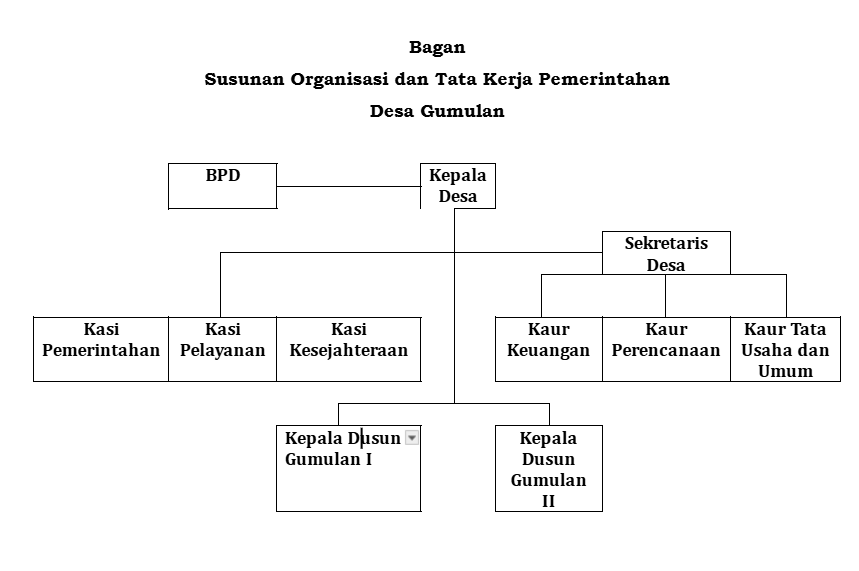

Profil Desa
Sejarah Desa
Desa Gumulan memiliki cerita rakyat yang sangat melegenda tentang pertarungan sengit antara Kebo Kicak dan Surontanu. Kebo Kicak adalah pemuda sakti yang kerap mengganggu ketenteraman warga, bahkan konon mampu merobohkan tembok kokoh hanya dengan sundulan kepalanya. Kebengisannya yang semakin menjadi-jadi akhirnya terdengar oleh Surontanu, seorang pemuda sakti yang baru saja menyelesaikan pertapaannya.
Dengan bekal ilmu dan keberanian, Surontanu menemui Kebo Kicak hingga terjadilah pergumbulan hebat. Pertarungan dua sosok sakti ini berlangsung berhari-hari dan sangat sengit, bahkan sampai membuat area pertarungan menyerupai rawa-rawa. Pada akhirnya, Kebo Kicak berhasil dikalahkan dengan luka parah di kepalanya.
Dari peristiwa pertarungan tersebut, lahirlah nama desa ini. Kata "Gumulan" diambil dari bahasa Jawa "Gumbul" yang berarti pergumbulan atau perkelahian antara Kebo Kicak dan Surontanu.
Demografi & Geografis
Desa Gumulan merupakan salah satu dari 14 desa di wilayah Kecamatan Kesamben, berjarak sekitar 7 kilometer ke arah barat dari pusat kecamatan. Desa ini memiliki luas wilayah 237,915 hektar dan secara administratif terbagi menjadi dua dusun utama, yaitu Dusun Gumulan I dan Dusun Gumulan II.
Berdasarkan data tahun 2025, Desa Gumulan dihuni oleh 2.311 jiwa yang tergabung dalam 1.018 Kepala Keluarga (KK). Mayoritas penggerak ekonomi di desa ini bersandar pada sektor agraris, di mana sebagian besar warganya berprofesi sebagai petani dan buruh tani.
Secara letak geografis, wilayah Desa Gumulan berbatasan langsung dengan beberapa desa dan wilayah perairan, dengan rincian sebagai berikut:
| Sebelah Utara | Sungai Brantas, Desa Tapen Kecamatan Kudu |
| Sebelah Selatan | Desa Pojokkulon Kecamatan Kesamben |
| Sebelah Timur | Desa Jatiduwur Kecamatan Kesamben |
| Sebelah Barat | Desa Kepuhdoko Kecamatan Tembelang |
Peta Wilayah
Berikut adalah peta administratif wilayah Desa Gumulan hasil pemetaan tim KKN kami.

Struktur Pemerintahan
Berikut adalah bagan susunan organisasi dan tata kerja Pemerintah Desa Gumulan.
